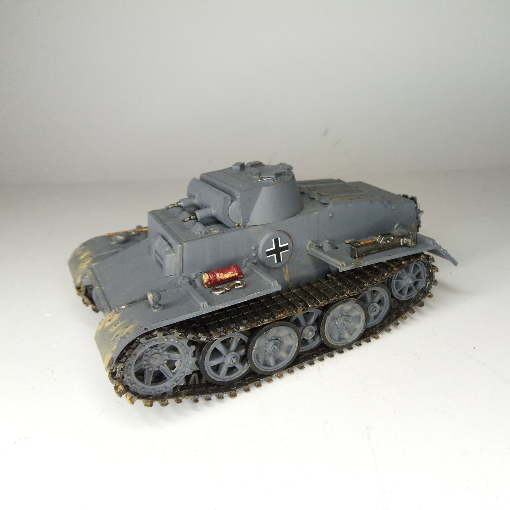
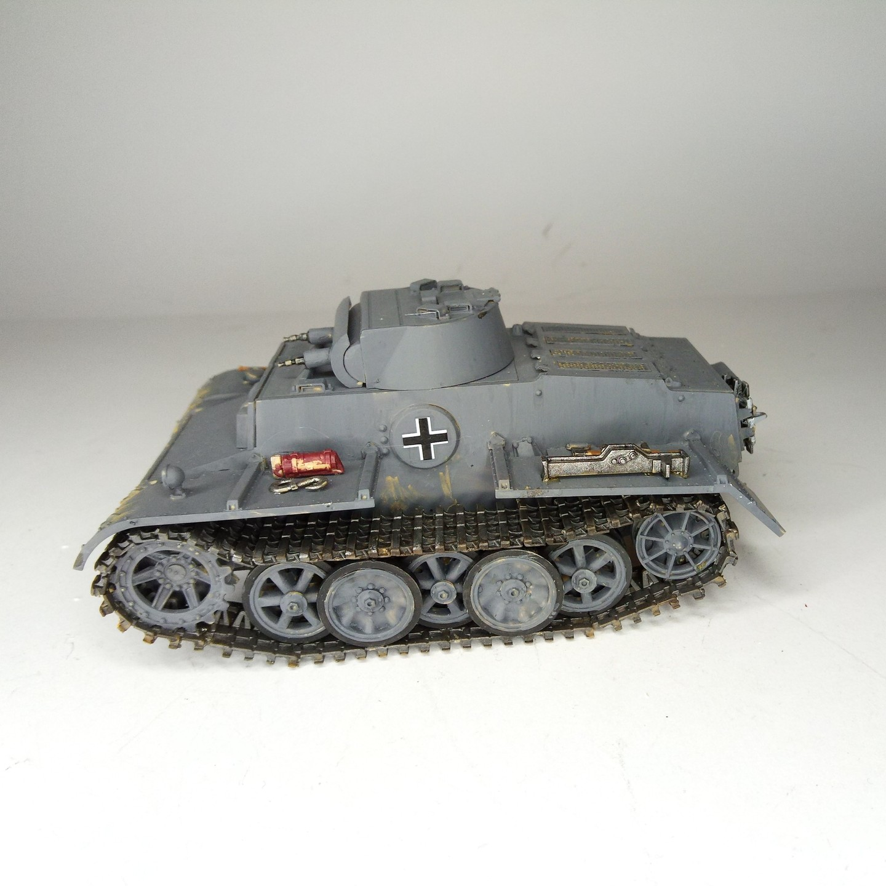

Mezzi militari · scale model archive
Panzer I Ausf.F
Panzer I Ausf.F — Kit: Ark, Scale: 1/35. Cute little much armored tank, more info on https://tanks-encyclopedia.com/ww2/germany/panzer_i_ausff.php #1/35…

Photo gallery

English description
Cute little much armored tank, more info on https://tanks-encyclopedia.com/ww2/germany/panzer_i_ausff.php
#1/35 #Ark #PanzerI
Descrizione italiana
Piccolo carro molto corazzato, davvero simpatico. Maggiori informazioni: https://tanks-encyclopedia.com/ww2/germany/panzer_i_ausff.php